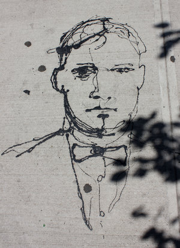
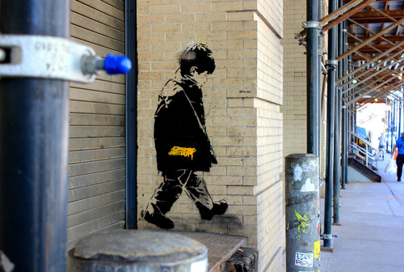
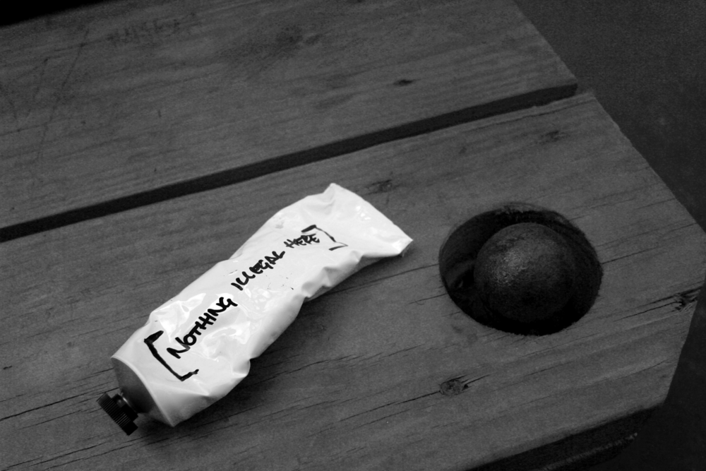

5Pointz Graffiti
Revived at New Museum of Street Art
A 20-story stairwell at a Manhattan Hotel brings together the works of street
artists who worked at the now-demolished 5Pointz outdoor gallery
by Jason Daley
smithsonian.com
september 20, 2018
For years, the 5Pointz Graffiti Collective had been permitted to create art on a block of dilapidated warehouses in Long Island City, Queens. Then, in 2013, the murals were whitewashed by the building’s owner, in violation of a court order. While that artwork cannot be recovered, the spirit of 5Pointz lives on. Earlier this year, the street artists got some good news when a federal judge awarded the group $6.75 million in damages for the destruction of their work (the case remains under appeal). Now, in another piece of good news, Sarah Cascone at artnet News reports a new project has brought some of 5Pointz’ artists back together for a Museum of Street Art (MoSA) at the new citizenM New York Bowery.
Over the summer, the Netherlands-based boutique hotel chain invited the 5Pointz artists to create new artworks in 21 stories of the hotel’s stairwell. Twenty artists from New York, L.A., Atlanta, London, Paris and Australia participated in the creation. “The process of painting was like a reunion—music blasting in the hallways, jokes around every corner. The crew was back and it felt amazing,” says Marie Cecile Flageul, who was the spokesperson for 5Pointz and now serves as the curator of MoSA.
The artwork is intended to be a “A Vertical Love Letter to the Bowery,” and includes homages to celebrities who made an impact on the eponymous neighborhood, like RuPaul, Lou Reed, Rosario Dawson, and Allen Ginsberg. All kinds of styles of street art are featured—everything from hyper-realistic portraits to old-school lettering and “callifigraffiti.”
The artists spent 420 hours and used 500 cans of spray paint creating the murals. You’ll see street art from luminaries including 5Pointz founder and curator Jonathan Cohen, NeverSatisfied and Thomas Mestre a.k.a. Djalouz, whose work is the first visitors see when they enter the space, and includes the quote “Art lives through the eyes of the person looking at it” from artist and activist Keith Haring. “5Pointz can never be replaced,” Flageul notes. “Nevertheless, to be gifted over 5,000 square feet of space to showcase a sample of what it was is a priceless gift.”
Lauren Hard at The New York Times reports the permanent installation is opening tonight for a preview party and will open to visitors seven days a week beginning in October. The first 500 visitors will be escorted on a guided tour by Flageul, but after that museum-goers will need to check in at the front desk for a self-guided tour of the art.
 This is not the first time since its demolition that the 5Pointz artists have been able to reunite. In 2015, they were asked to paint murals inside August Martin High School in Queens and also created works at the North Carolina Hopfest music festival. But MoSA is by far the largest re-expression of the 5Pointz aesthetic. “Fans that love 5Pointz are going to flock here to see this,” Cohen tells Hard. “It’s going to be a reunion for artists. It is a little taste of what was lost. So I’m pretty excited. And it’s also, you know, moving forward, moving to the next chapter."